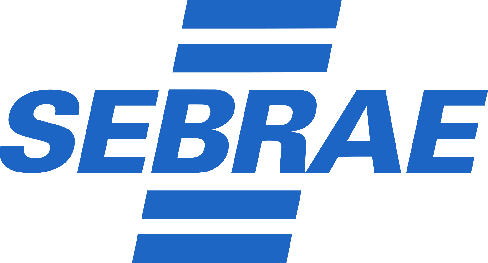

01 / SEBRAE
SEBRAE Innovation Ecosystem
A platform that makes a complex methodology clearer in everyday use.

Context and challenge
SEBRAE Paraná had developed a methodology to assess and strengthen innovation ecosystems in municipalities. The method was comprehensive, but applying it relied on forms, spreadsheets, and documents scattered across separate files.
This made collaboration, assessment tracking, and reporting difficult. Training new consultants was also demanding because the knowledge they needed was not always accessible during their work.
My role was to understand the methodology, organize the experience, and design a platform for consultants and managers. The challenge was to make the work easier while preserving the method’s depth.
Understanding each person’s work
I started by studying the roughly 150-page manual, talking with the SEBRAE team, and reviewing their files and processes. I wanted to understand both the information they needed and how they used it.
I identified two main user groups:
- Consultants: interviewed ecosystem stakeholders and completed assessments. They were the most frequent users.
- Managers: tracked the work, reviewed reports, and monitored how innovation ecosystems evolved.
Mapping the consultant’s journey revealed an opportunity: even with a complex methodology, everyday work could be organized into a clear sequence.
From methodology to workflow
The work followed a relatively predictable path: select or create an assessment, collect information, enter the data, and calculate the score.
I organized the interface around that sequence, making one primary action clear in each context. Operational tasks took priority, while methodological explanations remained available as needed.
Consultants were expected to become familiar with the platform over time. Extensive content therefore did not need to compete with daily actions. Dashboards and analysis were more relevant to managers and received less emphasis in the data-entry flow.
This organization allowed users to move quickly and consult the method’s details whenever a question arose.


Validating the structure
Before refining the visual design, I created wireframes and validated them with the product owner. The focus was checking whether the navigation made sense, the steps were complete, and there was enough information to guide implementation.
No significant structural changes emerged, so I moved on to a more detailed prototype. Validating this foundation early helped avoid larger revisions once the screens were ready.
I also preserved representations the team already knew, such as radar charts. They were part of the methodology’s visual language and helped people recognize results in the new tool.
Help at the right moment
When presenting to SEBRAE, the main request was to include more explanations of the methodology within the platform. This was especially important for less experienced consultants.
I expanded the content available on demand. The modal explaining effectiveness level, for example, explained the concept in greater depth while keeping the main screen focused on the task.
This brought knowledge closer to the moment of use. Consultants could continue entering data and open an explanation when needed, without searching through separate documents.

What we learned from testing
We tested the solution with both non-specialists and SEBRAE experts. Each group helped us observe a different part of the experience.
Non-specialists revealed areas with insufficient contrast and terms that were difficult to understand. We corrected the visual issues and revised some terminology to make the interface more accessible.
The experts recognized the methodology and felt familiar with the proposal. At the same time, testing revealed the project’s main friction point: the project catalog.
The catalog and consultants’ daily work
The platform organized each assessment as a project. This structure helped SEBRAE track initiatives, record their history, and monitor how ecosystems evolved.
Consultants, however, thought about their work in terms of activities: collecting data, producing an assessment, and delivering information to managers. Creating a separate project for every assessment did not feel natural to them.
Because the structure met an important institutional need, there was little room to remove it. I proposed preloading projects into the database so that users would see real examples on their first visit.
These records would serve as references for naming projects, organizing assessments, and understanding the expected level of detail. The proposal helped reduce the learning effort, although it did not fully resolve the gap between the institutional structure and the way consultants worked.

Working with developers
The technical team chose a design system based on Material Design. I worked within that foundation to preserve the solution’s principles of organization and clarity.
Developers did not participate in discovery or the initial client presentation. Before implementation, I presented the prototype in meetings with the team and the product owner, explaining the flows and the reasoning behind decisions.
There were no significant change requests due to technical limitations. In reviews, the implementation closely matched the prototype, preserving the choices developed throughout the process.
Results
The platform brought together information and activities that had previously relied on separate files and manual consolidation.
Consultants gained access to the assessment process and the guidance they needed in one system. Managers gained direct, real-time access to current and historical data, reducing their reliance on reports prepared by consultants.
SEBRAE’s qualitative feedback was very positive. The project lead highlighted how faithfully the platform represented the methodology, one of the work’s main objectives.
The project also aimed to make the solution developed in Paraná available to support adoption of the method by other SEBRAE units across Brazil.

What I would do differently
Today, I would explore more alternatives for the catalog. The idea would be to preserve project-based organization in management and data while bringing the start of the experience closer to activities consultants already recognized.
The main lesson was that digitizing a process requires choosing which parts of its structure each person needs to see. That choice can make work easier without losing the rigor the business requires.